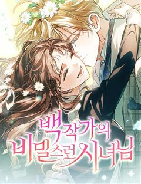
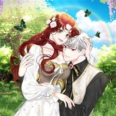

판타지 성장·우정 웹툰 추천 TOP 30
판타지 작품 중에서 성장물, 우정, 소년물, 성장드라마 같은 요소가 들어간 작품만 골랐어요. 네이버웹툰·카카오웹툰·레진코믹스에서 조건에 맞는 작품 278개 중 인기 순으로 30개를 골랐어요. 인기 TOP 3: 신의 탑, 전지적 독자 시점, 하루만 네가 되고 싶어
2026-10-01 기준 · 성인 작품 제외
내 취향으로 더 좁혀서 추천받기 →-
1

-
2
 네이버웹툰
네이버웹툰전지적 독자 시점
'이건 내가 아는 그 전개다' 한순간에 세계가 멸망하고, 새로운 세상이 펼쳐졌다. 오직 나만이 완주했던 소설 세계에서 평범했던 독자의 새로운 삶이 시작된다.
판타지구원서사레드아이스 스튜디오게임세계관네이버웹툰에서 보기 → -
3
 네이버웹툰
네이버웹툰하루만 네가 되고 싶어
'완벽한 인생이었다, 그 애가 나타나기 전까지는' 반전에 반전을 거듭하는 치밀한 궁중 서스펜스 네이버웹툰 최강자전 19년 대표작.
판타지구원서사서양왕족/귀족대형견남네이버웹툰에서 보기 → -
4
 네이버웹툰
네이버웹툰사신소년
수명을 대가로 죽은 자의 능력을 빌리는 소년! 화려한 액션에서 부터 스포츠, 두뇌 플레이까지 한계는 없다!
판타지소년물액션판타지학원액션현대네이버웹툰에서 보기 → -
5
 네이버웹툰
네이버웹툰퀘스트지상주의
[외모지상주의], [싸움독학], [인생존망]과 세계관을 공유하는 작품! 공부, 싸움, 외모. 뭐 하나 잘난 것 없는 평범한 고등학생 ‘김수현’의 눈앞에 갑자기 퀘스트창이 나타났다! 첫 번째 퀘스트, [엄마한테 사과하기]를 완료한 수현은 보상으로 키가 3cm 커지게 되는데! 퀘스트 엄청…
판타지우정사이다집착녀현대네이버웹툰에서 보기 → -
6
 카카오웹툰
카카오웹툰무한의 마법사
마굿간에 버려져 평민으로 키워진 아이, 시로네. 타고난 통찰력으로 글까지 깨우친 아이는 도시로 나간 어느 날 그토록 궁금해하던 마법을 경험한다. 그 길로 마법사를 꿈꾸게 된 시로네. 하지만 신분의 장벽이 두터운 이 곳은 아이에게 냉혹하고, 그는 채 어른이 되기도 전에 이 세상의 이면을…
판타지성장물미스터리학원물카카오웹툰에서 보기 → -
7
 네이버웹툰
네이버웹툰초인의 시대
지구에 근원 모를 괴물들이 출현하고 그들을 제압하는 '초인'들 또한 등장한다. 정체불명의 괴물과 초인, 바야흐로 '초인의 시대'가 도래한다!
판타지소년물액션판타지현대최강자전네이버웹툰에서 보기 → -
8
 네이버웹툰
네이버웹툰내가 키운 S급들
F급 헌터. 그것도 잘나가는 S급 동생 발목이나 잡는 쓸모없고 찌질한 F급 형. 개판된 인생 대충 살다가 결국 동생 목숨까지 잡아먹고 회귀한 내게 주어진 칭호, '완벽한 양육자'. 그래, 이번에는 나대지 말고 얌전히 잘난놈들 뒷바라지나 해 주자. 라고 생각했는데, S급들이 좀 이상하다.
판타지우정현대판타지현대상태창네이버웹툰에서 보기 → -
9

-
10
 네이버웹툰
네이버웹툰별을 품은 소드마스터
기사를 동경하는 슬럼가의 부랑아 블라드. 검은 벼락을 맞는 사고 이후부터 들리기 시작한 누군가의 목소리와, 어느 날 갑자기 등장한 푸른 달빛의 기사가 블라드의 세계를 산산조각내면서 뒷골목 소년의 삶이 송두리째 변하기 시작하는데... 높디높은 밤하늘에 있지 않더라도, 아무도 보지 못하는…
판타지성장물소년물중세판타지액션시리어스네이버웹툰에서 보기 → -
11
 카카오웹툰
카카오웹툰만렙 플레이어의 100번째 회귀
전세계적으로 15세부터 29세는 무조건 참가해야 하는 총 20라운드의 데스게임. 이 게임에 회귀특성으로 100번째 도전을 시작하게 된 주인공이 99번의 경험으로 얻은 정보를 이용해 남들보다 압도적으로 강해지는 사이다물. 마지막 라운드의 조건이 최소 5명인 걸 깨닫고, 실패를 반복하지…
판타지성장물미스터리학원물카카오웹툰에서 보기 → -
12
 네이버웹툰
네이버웹툰66666년 만에 환생한 흑마법사
강대했던 흑마법사 디아블로 볼피르. 12신의 계략에 당해 억겁 속에 봉인되었지만, 그로부터 66666년이 흘러 다시금 이 땅에 강림한다! "응애!" 웰턴 백작의 갓 태어난 장남으로. 딥다크 매직 판타지 시작!
판타지성장물중세판타지액션서양신화네이버웹툰에서 보기 → -
13
 네이버웹툰
네이버웹툰마른 가지에 바람처럼
남편을 잃고, 아이를 빼앗기고, 이제 생매장을 눈 앞에 둔 과부 리에타. 그 곳에 ‘미친 폐황자’로 불리는 저주받은 땅, 악시아스 성의 대공. 킬리언이 나타났다. 그녀를 데려가겠다고 말하는 킬리언이 인사를 건넨다. “안녕, 요부”
판타지구원서사설렘폭발서양이능력네이버웹툰에서 보기 → -
14

-
15
 카카오웹툰
카카오웹툰더 챌린저
'루저', '약자', '땅바닥'. 모두 현실에서 나를 부르는 호칭들이다. 하지만 그건 전부 '현실'에서의 이야기일 뿐. 가상현실 게임에서조차 '루저'라는 법은 없잖아? 게임 속에서 나는 최고가 된다! '루저' 박노아의 프로게이머 도전기. <THE CHALLENGER>
판타지성장물사이다카카오웹툰에서 보기 → -
16
 네이버웹툰
네이버웹툰신화급 귀속 아이템을 손에 넣었다
D급 무투계 레이더로 마법계 레이더들의 고기방패나 하며 별 볼 일 없이 살던 재현. 그러던 어느 날, 던전에서 우연히 "오딘의 눈" 이라는 최강의 귀속 아이템을 얻게 됐다. 신의 눈을 가진 자, 세계를 구할 신의 대적자의 운명을 개척하라!
판타지구원서사사이다아카데미물아포칼립스네이버웹툰에서 보기 → -
17
 네이버웹툰
네이버웹툰나태 공자, 노력 천재 되다
잠을 도피처로 삼아 온 소년 아이른 파레이라. 사람들은 그를 나태 공자라 부르며 조롱했지만 그는 변할 생각이 없었다. 어느 날 어느 검사의 꿈을 꾸기 전까지는... 그것은 그저 묵묵히 수십 년간 검을 휘두르며 단련하는 한 재능 없는 사내에 관한 꿈이었다.
판타지성장물성장드라마중세판타지액션서양네이버웹툰에서 보기 → -
18
 카카오웹툰
카카오웹툰블랙 베히모스
태초에 세 명의 신이 있었다. 땅의 베히모스, 바다의 레비야탄, 하늘의 즈가. 그러나 베히모스와 레비야탄은 서로를 증오하였고 사투 끝에 둘다 죽게 된다. 이를 지켜본 즈가가 눈물을 흘렸고, 그 눈물이 탈리스라는 신비한 힘을 가진 광석이 공존하는 세상을 탄생시킨다. 이 탈리스를 두고 분…
판타지성장물학원물카카오웹툰에서 보기 → -
19
 카카오웹툰
카카오웹툰0살부터 슈퍼스타
엘프, 요정, 슬라임, 선물상자, 마왕 등 수천 번의 환생에 이어 몇 번째인지도 모를 새로운 삶. 인간 아기로 태어난 나 이서준! 내가 살아온 기억들이 동화처럼 남아 있는 생의 도서관 속에서 가장 간절히 원했던 꿈이 있는 전생을 보게 된다. 거기다 사람들의 눈을 사로잡는 이능력들까지!…
판타지성장물힐링눈물샘자극카카오웹툰에서 보기 → -
20
 카카오웹툰
카카오웹툰소설 속 엑스트라
"나는 누구지?" 이 세상은 내가 쓴 소설. 그러나 나는 단 한 번도 쓴 적 없는 인물이 되었다. 얼굴은 물음표에다, 소설 속 그 누구와도 접점이 없는, 아무도 기억 못할 그런 인물. 영웅 아카데미에 입학한 엑스트라, 아니 소설 속 먼지가 살아남는 법. 남은 소설 분량까지 버텨야 한다!
판타지성장물사이다학원물카카오웹툰에서 보기 → -
21
 카카오웹툰
카카오웹툰겨울성의 아기 죄수님
나라는 패망하고, 왕족들이 모두 처형되던 날 밤. 당연히 자신도 죽을 것이라 생각했던 클라리스는 뜻밖의 말을 듣게 된다. "열여덟이 되지 않은 자를 사형에 처할 수는 없다. 대신 네가 열여덟이 되는 날, 나는 너를 죽일 것이다." 그렇게 클라리스에게 주어진 십 년이라는 시간. 클라리스…
판타지성장물힐링로판카카오웹툰에서 보기 → -
22

-
23
 카카오웹툰
카카오웹툰신인인데 천만배우
계부 밑에서 어렵게 유년시절을 보낸 무영. 그에겐 삶이 지옥과도 같았다. 살아 있는 지옥에서 살 길을 알려준, 신비스러운 한 목소리. “네 인생 대신 다른 누군가의 인생을 살아." 그렇게 시작한 연기였는데…… 생존 본능과도 같은 것이었을까. 잘해도, 너무 잘한다. 연기를 통해 새 삶은…
판타지성장물미스터리카카오웹툰에서 보기 → -
24

네이버웹툰백작가의 비밀스런 시녀님
가난한 집에서 태어난, 끔찍하게 못생긴 계집아이 '폴라'. 우연한 계기로 명망 높은 벨루니타 백작가의 사용인으로 고용된다. 그런데, 모셔야 할 주인님 '빈센트 벨루니타'는 시력을 잃은 후 공포에 떨며 방에 틀어박혀 있기만 한데…. 그가 다시 세상으로 나올 수 있을 때까지, 폴라는 오직…
판타지구원서사서양왕족/귀족사연남네이버웹툰에서 보기 → -
25
 카카오웹툰
카카오웹툰권왕전생
인간들이 이종족을 노예로 부리는 세상. 대마도사 '레펜하르트'는 이종족들을 돕는다는 이유로 인간들에게 마왕 취급을 받는다. 마왕을 토벌하기 위해 온 용사 일행! '레펜하르트'는 그에 맞서 용사 일행에게 큰 피해를 주는 것에 성공하지만, 결국 권왕 '테스론'에게 죽임당할 위기에 처하는데…
판타지성장물학원물카카오웹툰에서 보기 → -
26

카카오웹툰그냥 악역으로 살겠습니다
책 속 악역, 공작 영애에 빙의했다! 감히 여주인공을 죽이려한 살인미수범이 이 몸의 주인이라고? 기왕 이렇게 된 거 조용한 곳에서 놀고먹으며 막 살자! 고 생각한 것도 잠시. 벌로 쫓겨난 북방의 이곳은 너무너무너무 추웠다. 얼어 죽기 전에 불꽃의 대악마를 불러내 벽난로에 불을 지폈는데…
판타지성장물사이다로판카카오웹툰에서 보기 → -
27
 카카오웹툰
카카오웹툰막내 공녀의 총애를 독차지했더니, 모두 내게 집착한다
정보 길드의 일급 요원으로 임무를 수행하던 중 검에 가슴이 꿰뚫렸다. 영락없이 죽었다고 생각했는데……. 8살, 지옥 같던 보육원 시절로 돌아왔다?! “안농, 난 다나야!” 마침, 내 앞에 나타난 엘라드 공작가의 막내 공녀 다이애나. 지난 생의 후회를 반복하지 않기 위해 다이애나를 보살…
판타지성장물미스터리로판육아물카카오웹툰에서 보기 → -
28
 카카오웹툰
카카오웹툰이번 생은 아역부터
뭘 해도 망하던 망돌 인생 4년 차 강수현. 겨우 찾은 배우로서의 적성으로 드디어 빛을 보나 싶었지만, 반대편에서 오는 트럭과 충돌하여 죽음의 문턱이 다가와 절망하는데... “아니 잠깐, 나 안 죽었잖아?” 정신을 차려보니 거울에 비친 모습은 최고로 귀여웠던 5살 때의 나? 그래, 이…
판타지성장물힐링카카오웹툰에서 보기 → -
29
 카카오웹툰
카카오웹툰네크로맨서 학교의 소환천재
네크로맨서 진영과 프리스트 진영의 '100년 전쟁' 이후. 힘의 구도를 뒤바꿀 역대급 인재가 태어났다. 무엇을 상상하던 그 이상의 잠재력. 아버지의 언데드 군단을 손에 넣고, 대륙을 양분하는 위대한 네크로맨서 학교 '키젠'에 입학한다. 엘리트들 사이에 있어도 천재는 천재. 새로운 케이…
판타지성장물학원물카카오웹툰에서 보기 → -
30
 네이버웹툰
네이버웹툰악당들의 후원자가 되었다
좋소 노예인 내가 게임 속 귀족으로 빙의되었다. 근데 미래의 악당들에게 죽는 엑스트라라고? 이들을 교화시켜 어떻게든 귀족 생활을 누리고 말 테다! 아직 어린 악당들의 흑화를 막기 위해 후원했고, 어려운 환경을 극복하게 만들어줬다. 그 결과 뿌듯함이 느껴질 만큼 모두 훌륭하고 평범하게…
판타지소년물액션판타지판타지개그게임네이버웹툰에서 보기 →